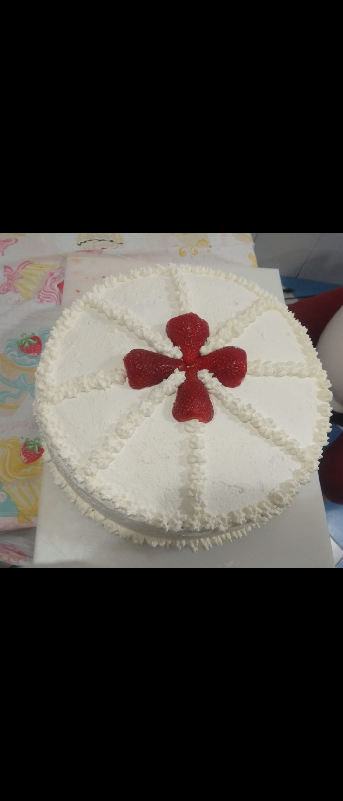
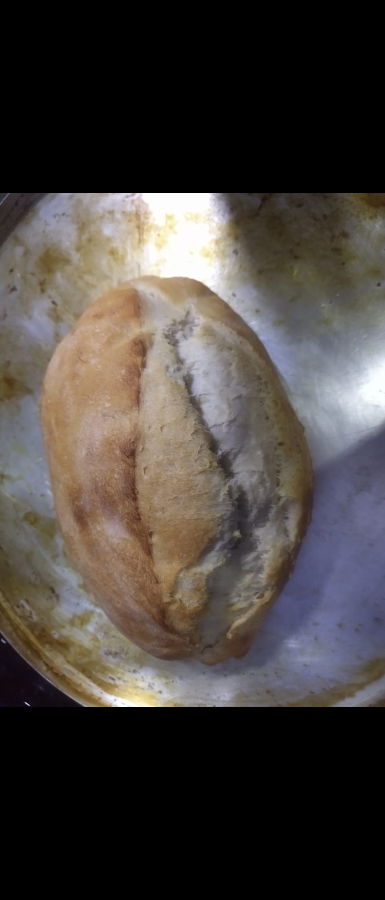
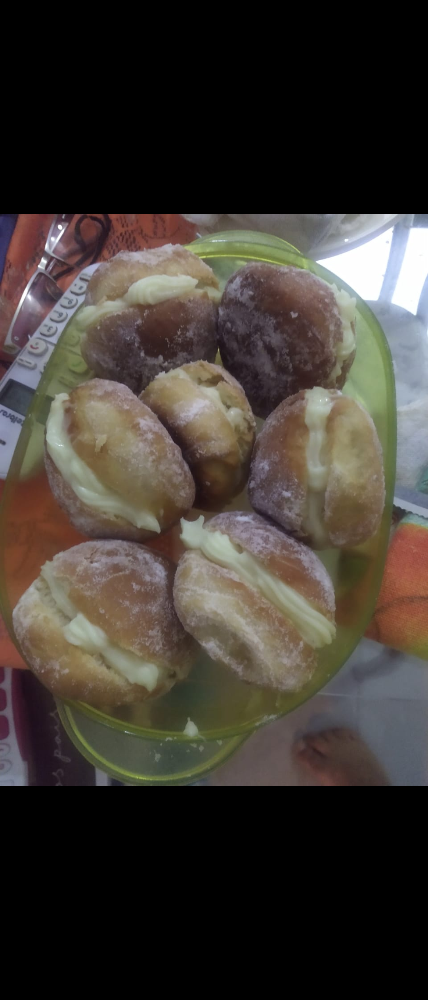
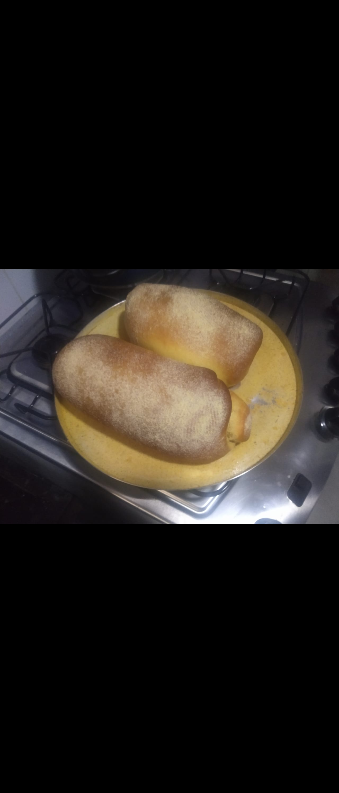

Hey, sou Eliel e eu sou um amante da culinária, porém apenas por hobby, comecei a cozinha com 15~16 anos para poder ajudar em casa e acabei pegando o gosto pela cozinha. Também foi quando comecei a fazer minha própria dieta(época que estava focado) .
Além disso sou muito fã da musculação e do vôlei, são esportes que eu praticaria por horas sem reclamar, na cozinha também tento minhas inovações de vez em quando, normalmente apenas depois de fazer a receita original alguma vezes, medo de errar 😂
Tentativas
- 2015: Primeira vez que fiz um bolho de fubá para a minha irmã, a partir disso comecei a inovar diversas vezes colocando goiabada, creme de goiabada, erva doce na massa do bolo
- 2015: Comecei a diversificar as receitas após pegar o gosto pela coisa, a partir disso comecei a fazer bolos com recheios e caldas.
- 2016: Comecei a tentar fazer massas, época que ficava acordado até tarde, aí deixava a massa crescendo enquanto assistia filme,a partir disso comecei a fazer pães diversificados como sonho, pão de sal, pão de fubá.
Portifólio
   Contato
 +55 21 992 030 991
+55 21 992 030 991 +55 21 992 030 991
+55 21 992 030 991 Student@Eliel.br
Student@Eliel.br- https://Eliel.br
Habilidades